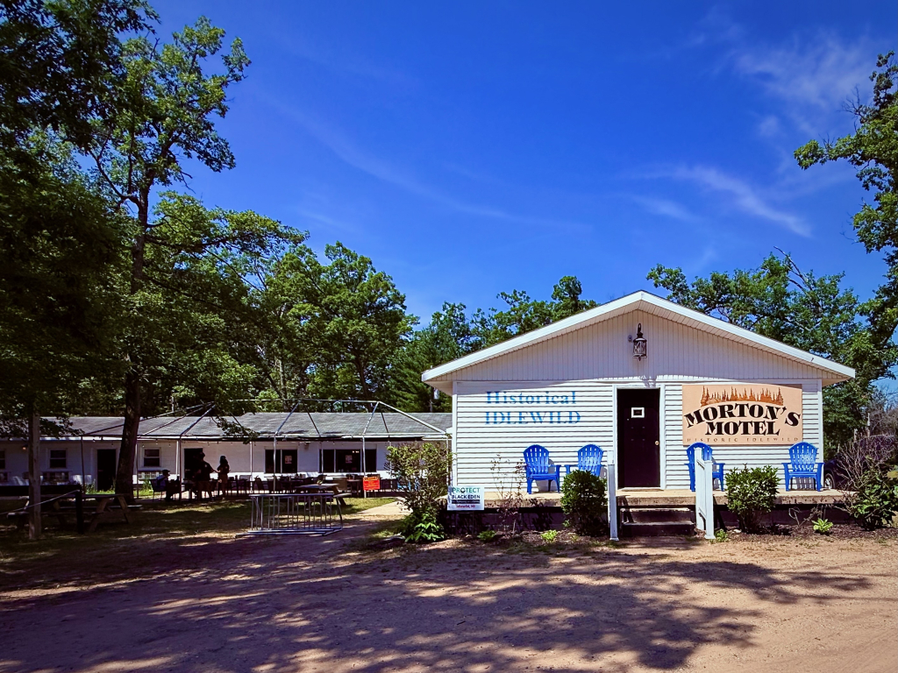

Morton’s Motel
Listen to the Story
Narrated by Chris J. Grier, Historian & Yates Township Supervisor
0:00
0:00

Morton’s Motel is a surviving example of Idlewild’s long tradition of Black travel, hospitality and community preservation. When the property faced a sale that could have removed it from its historic community purpose, a group of Idlewilders pooled resources to keep it locally connected. Today it remains a place for lodging, events, reunions and community activity.